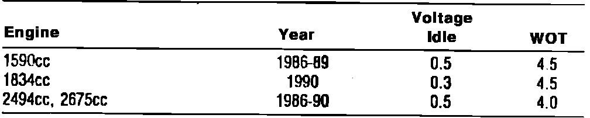

Operation CHARM
: Car repair manuals for everyone.
Home
>>
Acura
>>
1988
>>
Legend Sedan V6-2675cc 2.7L SOHC FI
>>
Repair and Diagnosis
>>
Sensors and Switches
>>
Sensors and Switches - Powertrain Management
>>
Sensors and Switches - Fuel Delivery and Air Induction
>>
Throttle Position Sensor
>>
Specifications
Throttle Position Sensor: Specifications
Fig. 3 Throttle Position Sensors:
